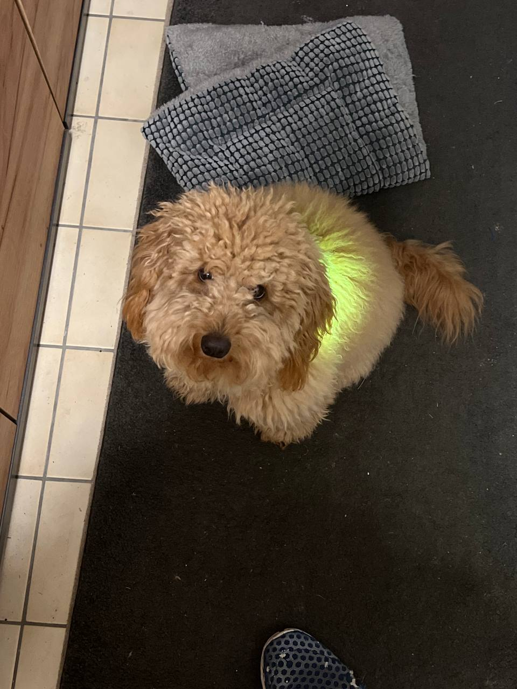

00
Fr, 10. April
DIE ANREISE
Weiterstadt
→ Potsdam
→ Potsdam
FlixTrain direkt nach Berlin. Nikkis erste lange Zugfahrt. In 5,5 Stunden beim Kumpel.
~5,5h Gesamtreise
FlixTrain FLX10
~27 EUR gesamt

REISE-ROUTE
START
Weiterstadt
Bus WE3, 20 Min
→
UMSTIEG
Darmstadt Hbf
FlixTrain, 4:30h
→
UMSTIEG
Berlin Hbf
RE1, 25 Min
→
ZIEL
Potsdam
Beim Kumpel!
- FlixTrain FLX10: Direkt Darmstadt → Berlin!
- Preis: ab 10-15 EUR + Hundeticket ~5-10 EUR
- Bus WE3 + RE1 Berlin-Potsdam: je ~3-5 EUR
- Gesamt: ~22-33 EUR (ohne D-Ticket)

NIKKI IM FLIXTRAIN
- PFLICHT: Maulkorb + Leine + Decke!
- Kinderticket für 7kg Doodle (~5-10 EUR)
- Decke = ihr „sicherer Ort“ im Zug
- Wasser + Leckerlis griffbereit
- Platz am Gang reservieren (mehr Beinfreiheit)
- VOR der Fahrt: 30 Min Gassi!
PROFI-TIPPS
- Morgens fahren: weniger voll, ruhiger
- Rucksack als Sichtschutz neben Nikki
- Kau-Snack für die längste Strecke (4:30h)
- Handy laden im FlixTrain (USB-A Ports)
- Berlin Hbf: Gassi-Pause am Spreeufer!
- Ankunft Potsdam = Feiern!
9
10.-19. April
9 Tage Potsdam
Homeoffice & Erkunden
Homeoffice & Erkunden
Beim Kumpel arbeiten, Sanssouci erkunden, Nikki an die Stadt gewöhnen. Die Ruhe vor dem Abenteuer.
Homeoffice
Sanssouci Park
Nikki-Training

POTSDAM ENTDECKEN
- Sanssouci: Friedrichs Weinberg-Schloss, 300ha Park, UNESCO!
- Holländisches Viertel: 134 rote Backsteinhäuser, Cafés
- Glienicker Brücke: Bridge of Spies, Agentenaustausch
- Babelsberg: englischer Landschaftsgarten direkt am See
- Templiner See: Badestelle + Nikki planscht!

NIKKI-TRAINING VOR ORT
- S-Bahn/RE üben: Potsdam→Wannsee, kurze Strecken
- Bahnhof Potsdam: Geräusche, Menschenmengen, Ansagen
- Maulkorb-Training: täglich 10-15 Min steigern
- Spaziergänge aufbauen: 3km → 5km → 8km
- Ziel: Nikki ist reisefit am 19. April!
TAGESABLAUF & TIPPS
- Morgens: Gassi im Sanssouci Park, Frühstück, Homeoffice
- Mittags: Lunch-Break + Spaziergang am Templiner See
- Abends: Holländisches Viertel mit Kumpel erkunden
- Wochenende: Berlin Tagesausflug (S7, 40 Min direkt!)
- Ausrüstung bei Decathlon/Globetrotter checken
- 18. April: PACK-ABEND! Alles wiegen!
01-02
Sa-So, 19.-20. April
ABENTEUER-START
Spreewald
Kanu mit Hund
Kanu mit Hund
Stille Kanäle, Spreewald-Gurken, dein erstes Lagerfeuer der Tour
5-8 km Wandern
3-4h Paddeln
RE7+RE2, 1.5h

HIGHLIGHTS
- Kahnfahrt durch die Fließe (Nikki: 5 EUR)
- Kanu mit Nikki auf spiegelglattem Wasser!
- Bootsverleih Richter — Hund kostenlos im Kanu
- Lehde: autofreies Dorf, nur per Boot erreichbar
- Abends: Natur-Camping mit Hundestrand
- Frühmorgens Nebel über den Kanälen — mystisch!

UNTERKUNFT & ESSEN
- Natur-Camping 'Am See' (27 EUR/Nacht, Hundestrand!)
- Alt: Ferienhof Zum Spreewäldchen (45-70 EUR)
- Leinöl-Kartoffeln + Quark — DER Klassiker!
- Spreewälder Gurken direkt vom Bauernhof
- Anreise: RE7 + RE2 ab Potsdam, ca. 1.5h

CONTENT & SIGHTSEEING
- Lehde: autofreies Dorf, NUR per Boot erreichbar!
- Nikki im Kanu = YouTube Short #1 (POV vom Bug)
- Spreewaldmuseum: sorbische/wendische Kultur
- Stille Fließe im Abendlicht — UNESCO Biosphäre
- Tipp: Sonnenaufgang auf dem Wasser = Gold!
03
Mo, 21. April
Saale-Unstrut
Weinberge & Steilhänge
Weinberge & Steilhänge
Nördlichstes Qualitäts-Weinbaugebiet Deutschlands — Weinprobe am Abend
10 km Wandern
Freyburg → Naumburg
RE, 2.5h

HIGHLIGHTS
- Naumburger Dom: UNESCO Welterbe seit 2018! Stifterfiguren berühmt
- Weinbergterrassen mit 1000-jährigen Trockenmauern
- Unstruttal-Panoramaweg entlang der Steilhänge
- Freyburg: Schloss Neuenburg (1090), Sektkellerei Rotkäppchen
- Weinprobe: Müller-Thurgau, Silvaner, Weißburgunder
- Nördlichstes Qualitätsweingebiet Deutschlands!

UNTERKUNFT & ESSEN
- Pension Schleusenblick Freyburg (55 EUR)
- Alt: Winzerhof (60-80 EUR, Weinprobe inkl.)
- Winzerplatte: Käse, Schinken, Brot + Unstrut-Wein
- Schattige Abschnitte für Nikki, genug Wasser!
- Anreise: RE ab Lübbenau via Leipzig, ca. 2.5h

CONTENT & SIGHTSEEING
- Weinbergterrassen in goldener Stunde filmen
- Gimbal Slow-Pan über Steilhänge + Unstruttal
- Nikki zwischen Weinreben — Kontrast klein/groß
- Rotkäppchen Sektkellerei: Führung möglich!
- Tipp: Lock-Modus für Reveal-Shot bergauf
04
Di, 22. April
MUST-HAVE: WILDE SCHLUCHT
Bodetal
280 Meter Granit
280 Meter Granit
Die tiefste Schlucht nördlich der Alpen. Rauschende Bode. Roßtrappe.
9 km Wandern
Treseburg → Thale
RB, 3h

HIGHLIGHTS
- 280m tiefe Granitschlucht — tiefste nördlich der Alpen!
- Roßtrappe: Felsplateau 403m, Sage der Riesenprinzessin Brunhilde
- Hexentanzplatz: 454m, sagenhafter Ort der Walpurgisnacht
- Bodekessel: engste Stelle, Wasser rauscht durch Felsblöcke
- Rauschende Bode — Nikki kann an flachen Stellen planschen
- Bodetal im Morgennebel = MAGISCH, kaum Touristen vor 8 Uhr

UNTERKUNFT & ESSEN
- Hotel Bodeblick Treseburg (Miniatur-Dorf, 100 Einwohner!)
- Alt: FeWo Thale (45-65 EUR, am Fuß der Schlucht)
- Harzer Roller + Brockenwurst + Schierker Feuerstein
- HATIX: kostenloser ÖPNV im ganzen Harz inkl.!
- Anreise: RB Naumburg → Thale, ca. 3h

CONTENT & TIPPS
- Gimbal-Walk durch die Schlucht — DER YouTube Short!
- Slow-Mo 240fps: Bode-Wasser prallt an Granitfelsen
- 0.5x Ultraweit für die Enge der Schlucht!
- Feste Leine! Pfade steinig + nass + steil
- Tipp: Morgens 7 Uhr starten = fast allein!
05
Mi, 23. April
Ruhetag
Ilsetal, kein Wecker
Ilsetal, kein Wecker
Ausschlafen. Waldbach. Brocken-Panorama ohne Brocken-Massen. Bier. Bett.
8-10 km entspannt
Heinrich-Heine-Weg
RB 30min

HIGHLIGHTS
- Heinrich-Heine-Weg: romantischster Wanderweg im Harz, entlang der Ilse
- Eckertalsperre: stiller Bergsee mit perfekter Brocken-Spiegelung
- Brocken (1.141m) im Hintergrund — ohne Touristenmassen!
- Grünes Band: ehemalige innerdeutsche Grenze = Naturparadies
- Ilsenstein: 150m Granitfels über der Ilse, Heinrich Heine war hier

UNTERKUNFT & ESSEN
- Blockhaus/Pension Ilsenburg (50-65 EUR)
- Alt: Jugendherberge (25-35 EUR)
- Frühstück: ausgiebig in Pension!
- Hasseröder Bier + Harzer Schmaus am Abend
- Tipp: Wäsche waschen in der Pension!

NIKKI-ERHOLUNG & HALBZEIT
- Leichter Tag! Ilse-Fluss = Plansch-Paradies (flach, klar)
- Flache Wege, perfekt für junge Gelenke
- Halbzeit-Check: Pfoten, Stimmung, Futter prüfen
- Fell kontrollieren: Zecken? Matten? Kratzer?
- Dailys: Hotel-WLAN für Genshin + HSR!
06
Do, 24. April
Südharz
Stolberg & Gipskarst
Stolberg & Gipskarst
'Perle des Südharzes'. Ein See der verschwindet. Das größte Eisenkreuz der Welt.
10-12 km
Stolberg → Josephskreuz
RB+Bus, 2h

HIGHLIGHTS
- Stolberg: 'Perle des Südharzes', Fachwerk seit 1300, Thomas-Müntzer-Stadt
- Hungersee: See der VERSCHWINDET! Karsthöhle schluckt das Wasser
- Gipskarst: Höhlen, Dolinen, weiße Felsen, Heimkehle-Höhle
- Rüdigsdorfer Schweiz: EU-Naturerbe, bizarre Landschaft
- Josephskreuz: 38m Eisenkreuz, 360° Panorama, wie Eiffelturm im Wald

UNTERKUNFT & ESSEN
- Blockhaus Fuchsbau (49 EUR, eingezäunter Garten!)
- Alt: Pension Altstadt (40-55 EUR, Fachwerk)
- Thüringer Rostbratwurst + Köstritzer Schwarzbier!
- Nikki: frei laufen im eingezäunten Garten
- Anreise: RB Thale → Nordhausen, Bus → Stolberg

CONTENT & SIGHTSEEING
- Stolberg von oben: Fachwerk im Tal — Drohnen-Feeling
- Josephskreuz: 360° Panorama-Video oben auf der Plattform
- YouTube Short: 'Der See der VERSCHWINDET'
- Heimkehle: größte Gipshöhle Europas, unterirdischer See!
- Tipp: Hungersee Timelapse aufnehmen!
07
Fr, 25. April
MUST-HAVE #1 — DEIN MOMENT
Mystischer Nebelwald
Rennsteig bei Schmücke
Rennsteig bei Schmücke
Schneekopf 978m. Vessertal UNESCO-Urwald. Moosbewachsene Felsen. KEIN MENSCH weit und breit.
10-12 km
Schneekopf + Vessertal
Bus+RB, 3h

DER MOMENT
- Rennsteig im Morgennebel — absolute Stille
- Schneekopf: 978m, zweithöchster Thüringens, 100km Sicht
- Vessertal: UNESCO-Urwald, uralte Buchen, Moos
- Beerberg-Hochmoor: mystische Moorlandschaft
- Lagerfeuer am Trekkingplatz — DAS Erlebnis!

UNTERKUNFT & ESSEN
- Trekkingplatz Rennsteig (5-10 EUR, LAGERFEUER erlaubt!)
- Alt: Pension Schmiedefeld (40-55 EUR, warme Dusche)
- Kaffee am Gaskocher bei Sonnenaufgang im Nebel
- Kocher-Nudeln am Lagerfeuer — bester Abend der Reise
- Anreise: Bus Stolberg → RB → Schmiedefeld, ca. 3h
DER SHOT DER REISE
- Nikki auf einem Fels. Morgennebel. Lichtstrahl trifft sie.
- ProRAW: +0.5 bis +1.0 EV (Nebel täuscht!)
- Zeitraffer: 10 Min aufstellen
- Dafür lohnt sich 5:45 aufstehen.
08
Sa, 26. April
LETZTER GEHEIMTIPP
Schwarzatal
53km Kerbtal im Wald
53km Kerbtal im Wald
Steilste Standseilbahn, historische Mühlen, Schlossruine über dem Tal. Kaum Touristen.
12-15 km
Schwarzmühle → Schwarzburg
Bus+Bergbahn, 2h

HIGHLIGHTS
- Oberweißbacher Bergbahn: 25% Steigung, steilste Standseilbahn Europas!
- 53km Kerbtal — Flusslandschaft des Jahres 2023
- Schloss Schwarzburg: ehem. Residenz, Ruine thront über dem Tal
- Historische Mühlen: Schwarzmühle, Glasbach-Mühle
- Glasklare Schwarza = Bade- und Plansch-Paradies für Nikki!
- Seit 2019 offizieller Naturpark — kaum Touristen hier

UNTERKUNFT & ESSEN
- Pension Bergterrasse (50-60 EUR, Bergblick!)
- Alt: FeWo am Bach (45-65 EUR, Einschlafen mit Bachrauschen)
- Thüringer Klöße + Braten im Gasthaus — Pflicht!
- Hund: 5-6 EUR Aufschlag, Terrasse mit Bergblick
- Anreise: Bus + Oberweißbacher Bergbahn

CONTENT & SIGHTSEEING
- Bergbahn-Fahrt filmen — FPV-Modus am Gimbal!
- Schwarza-Kaskaden: Slow-Mo mit Nikki im Wasser
- Panoramaweg: Höhenweg für epische Tal-Shots
- Schloss-Ruine: mystisch + fotogen, perfektes Motiv
- Tipp: Nachmittagslicht im Tal ist golden!
09
So, 27. April
STERNENPARK
Rhön
Milchstraße über dem Moor
Milchstraße über dem Moor
Wasserkuppe 950m. Schwarzes Moor auf Bohlenwegen. Nachts: die Milchstraße mit bloßem Auge.
8-10 km
Wasserkuppe + Schwarzes Moor
RE, 3.5h (längster Transfer)

HIGHLIGHTS
- Wasserkuppe: 950m, höchster Berg Hessens, Wiege des Segelflugs!
- Schwarzes Moor: 66ha Hochmoor, Bohlenweg durch UNESCO-Biosphäre
- 'Land der offenen Fernen' — 360° endlose Weite, keine Bäume
- Kloster Kreuzberg: 1352 gegründet, Franziskaner brauen seit 1731!
- NACHTS: Sternenpark! Milchstraße mit bloßem Auge!
UNTERKUNFT & ESSEN
- Trekkingplatz Rhönwald (15 EUR, STERNENLIEGEN!)
- Alt: Pension Gersfeld (40-55 EUR, bei Regen)
- Rhönforelle frisch aus dem Bach + Rhöner Schafkäse
- Kloster Kreuzberg: Kreuzberg-Bier, legendäre Brotzeit
- Anreise: RE Sitzendorf → Fulda → RB52, ca. 3.5h

CONTENT & SIGHTSEEING
- Milchstraße — Nacht-Modus + Gimbal als Stativ, 30 Sek Exposure
- Timelapse Sternenhimmel: 15 Min = 30 Sek Video
- Schwarzes Moor Bohlenweg Panorama im Abendlicht
- Bohlenweg = Leine kurz halten (Naturschutz!)
- Tipp: Ab 22 Uhr auf Sternenliege — WOW!
10
Mo, 28. April
LETZTER TAG
Vogelsberg
& nach Hause
& nach Hause
Letzte Gipfeltour. Letzte Aussicht. Dann: deine Dusche, Nikkis Körbchen, PIZZA.
8 km + Heimreise
Hoherodskopf 764m
RB+S-Bahn, 4h

HIGHLIGHTS
- Hoherodskopf: 764m, größter Vulkan Mitteleuropas!
- Vulkanring-Wanderweg: moosbewachsene uralte Buchenwälder
- Niddaquelle: idyllischer Quellteich, Beginn der Nidda
- TrollLand: Waldversteck mit 1300m² eingezäuntem Garten!
- Nachmittags: ANKUNFT ZUHAUSE! 267 km geschafft!

HEIMREISE
- Letztes Kocher-Frühstück — genießen!
- Mittag: letzter Gasthof am Vogelsberg
- Route: Bus Schotten → Nidda → S6 Darmstadt
- Ca. 2.5h Heimfahrt (alles D-Ticket!)
- Abend: PIZZA BESTELLEN! Du hast es verdient!
GESCHAFFT!
- Letztes Panorama vom Hoherodskopf filmen
- Nikki auf dem Gipfel — DAS Abschlussfoto!
- Ankommen-Video: Tür auf, Nikki rennt ins Körbchen
- 267 km, 10 Tage, 6 Regionen — GESCHAFFT!
- Nikki ist jetzt ein echter Abenteurer-Hund!
PROST!
Bier & Wein entlang der Route

BIER-HIGHLIGHTS
- Köstritzer Schwarzbier — DDR-Kultbier, dunkel, malzig. Überall in Thüringen
- Kloster Kreuzberg — Franziskanerkloster in der Rhön, legendärer Biergarten!
- Rhöner Brauhaus — Kupfer-Märzen + Natur-Radler. Ehrlich regional
- Hasseröder / Wernigeroder — Harz-Klassiker, überall erhältlich
- Henneberger Bräu — Südthüringer Geheimtipp!

WEIN-ROUTE
- Saale-Unstrut (Tag 3) — Nördlichstes Qualitätsweingebiet
- Müller-Thurgau: frisch, leicht, perfekt zum Wandern
- Silvaner: trocken, mineralisch, Winzerplatte dazu!
- Weißburgunder: elegant, zum Abendessen
- Tipp: Winzerhof mit Weinprobe buchen!
STRATEGIE
- Überall nach 'Hausbier vom Fass' fragen
- Gasthöfe haben oft lokales Bier das es nirgends zu kaufen gibt
- In Thüringen: Rostbratwurst + Bier = heilige Kombination
- Rhön: Kloster Kreuzberg = Pflicht-Stopp (auch ohne Kirchenbesuch)
- Max 2 Bier am Wandertag! Dehydrierung!
FOTO & VIDEO
Top-Locations & Gimbal-Techniken
iPhone 13 Pro
DJI Osmo 7P
8 Short Ideas

NEBELWALD-AKTIONSPLAN
- Abend vorher: kachelmannwetter.de checken
- Tiefsttemperatur <8°C + Taupunkt-Differenz <3°C = NEBEL!
- Phase 1 (6:30-7:15): Kamm — Nebel als Teppich unter dir
- Phase 2 (7:15-8:30): Tal — Nebelschwaden, Lichtstrahlen!
- ProRAW: +0.5 bis +1.0 EV, Weißabgleich 5500K
DJI OSMO 7P MODI
- Follow: Standard, folgt Richtung
- Lock: Feste Richtung — Reveal-Shots!
- FPV: Alle Achsen frei, immersiv
- Active Track 6.0: Nikki antippen — Gimbal folgt
- Regel #1: JEDE Bewegung 3x LANGSAMER!
TOP IPHONE-SETTINGS
- Bodetal: 0.5x Ultraweit, Slow-Mo 240fps
- Nebelwald: ProRAW, Expo +0.5 EV
- Sternenhimmel: Nacht-Modus, Gimbal als Stativ
- Allgemein: 4K 30fps, HDR Video AN
- Backup JEDEN Abend auf SSD!
8 YOUTUBE SHORT IDEAS
#TitelBeschreibung
#1Nikkis ERSTER Kanu-TripPOV Kanu, Nikki am Bug, spiegelglattes Wasser
#2280m Schlucht mit HundBodetal Gimbal-Walk, Felswände links und rechts
#3Mystischer NebelwaldZeitraffer + Nikki-Reveal + Atemwolke im Morgenlicht
#4Engste Schlucht DeutschlandsDrachenschlucht 68cm, Nikki voraus, Tunnel-Shot
#5Milchstraße über der RhönSternenpark Timelapse, 15 Min = 30 Sek
#6Der See der VERSCHWINDETHungersee: Karstöhle verschluckt ganzen See
#710 Tage Wandern mit HundBest-of Zusammenschnitt, Vorher/Nachher
#8So sieht Wandern WIRKLICH ausBehind-the-Scenes: Regen, müde, echte Momente